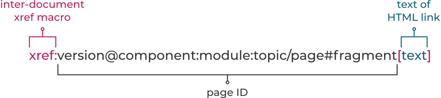

Cross references
You can link between sections with an in-page cross reference.
<<reference-a-section-in-the-same-page,Check it out>>But you can also easily, link 2 pages, or 2 modules, 2 components.

You can link between sections with an in-page cross reference.
<<reference-a-section-in-the-same-page,Check it out>>But you can also easily, link 2 pages, or 2 modules, 2 components.